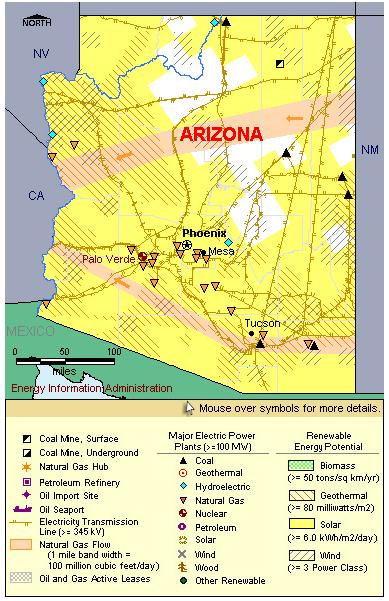

State Overview
There is one operating nuclear power plant in Arizona:
Palo Verde in Maricopa County
- The Palo Verde plant is the largest nuclear plant in the nation and the second largest power plant of any type after the Grand Coulee dam in Washington.
- Palo Verde is one of the few power plants in the Nation that contain three reactors (no U.S. power plants have more than three, although some foreign plants have more than four).
- Unit two was uprated in capacity and is now the Nation's largest electric power unit in terms of capacity.
- On November 18, 2005, the U.S. Nuclear Regulatory Commission announced approval of uprates at two of Palo Verde's reactors.
Contribution of Nuclear Power
Although it has only one nuclear power plant, Arizona is among the 15 largest states in terms of nuclear capacity.
Nuclear power accounts for only about 15% of Arizona’s total electric capacity but nearly 25% of its electricity generation, third after coal and natural gas.
Arizona exports approximately a quarter of its total electrical generation.
License Renewals & New Applications
- Palo Verde: On December 15, 2008, a license renewal application was submitted for all three of Palo Verde’s reactors. The earliest license expiration date for any of Palo Verde's trio of reactors is in June 2025 (for unit 1).

|
| Arizona Total Electric Power Industry, Summer Capacity and Net Generation, by Energy Source, 2008 |
| Primary Energy Source |
Summer Capacity
(MW) |
Share of State Total
(Percent) |
Net Generation
(Thousand MWh) |
Share of State Total
(Percent) |
| Nuclear |
3,942 |
15.2 |
29,250 |
24.5 |
| Coal |
5,818 |
22.5 |
43,840 |
36.7 |
| Hydro and Pumped Storage |
2,936 |
11.4 |
7,380 |
6.2 |
| Natural Gas |
13,031 |
50.4 |
38,822 |
32.5 |
| Other Renewable1 |
42 |
0.2 |
114 |
0.1 |
| Petroleum |
93 |
0.4 |
52 |
* |
| Total |
25,861 |
100.0 |
119,459 |
100.0 |
| Arizona Nuclear Power Plants, Summer Capacity and Net Generation, 2008 |
| Plant Name/Total Reactors |
Summer Capacity
(MW) |
Net Generation
(Thousand MWh) |
Share of State Nuclear
Net Generation (Percent) |
Owner |
Palo Verde
Unit 1, Unit 2, Unit 3 |
3,942 |
29,250 |
100.0 |
Arizona Public Service Co |
1 Plant
3 Reactors |
3,942 |
29,250 |
100.0 |
|
|
Plant Profiles
Palo Verde Nuclear Generating Station
| Palo Verde |
| Unit |
Summer Capacity
(MW) |
Net Generation
(Thousand MWh) |
Summer Capacity Factor
(Percent) |
Type |
Commercial Operation Date |
License Expiration Date |
| 1 |
1,311 |
9,953 |
86.7 |
PWR |
1/28/1986 |
6/1/2025 |
| 2 |
1,314 |
8,624 |
74.9 |
PWR |
9/19/1986 |
4/24/2026 |
| 3 |
1,317 |
10,673 |
92.5 |
PWR |
1/8/1988 |
11/25/2027 |
| |
3,942 |
29,250 |
84.7 |
|
|
|
Operator: Arizona Public Service Company
Location and Service Territory: Palo Verde is located in Maricopa County, on a 4,050-acre site near Wintersburg, Arizona.
Construction Cost: Palo Verde units 1 and 2 cost $8.001 billion (2007 USD). Cost data for Unit 3 is not available.
Reactor Descriptions: All three of the Palo Verde units are Westinghouse two-loop pressurized water reactors.
Cooling System: The plant uses reprocessed sewage water for its mechanical draft cooling towers.
see also:
more annual nuclear statistics
projected electricity capacity to 2035
international
electricity statistics
| |